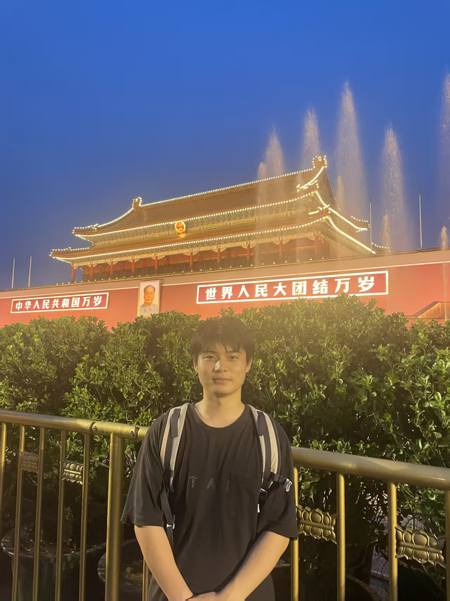
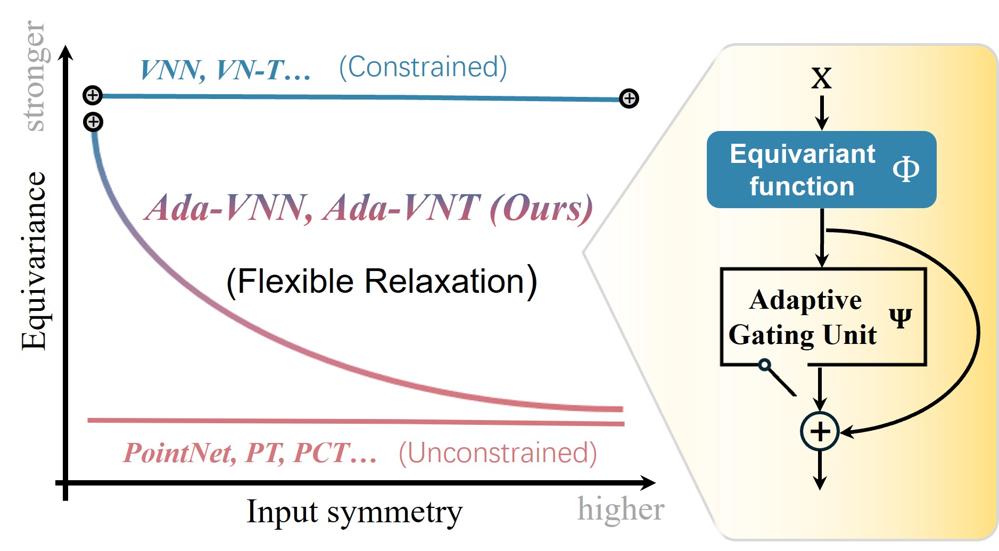
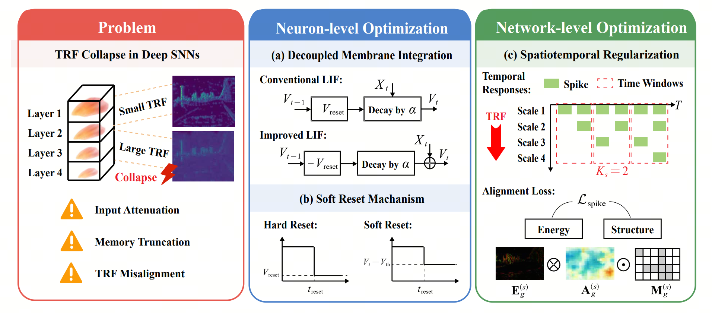
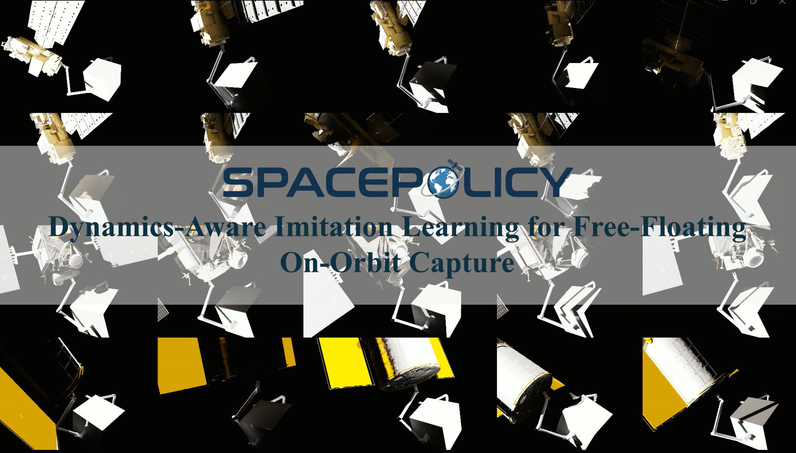
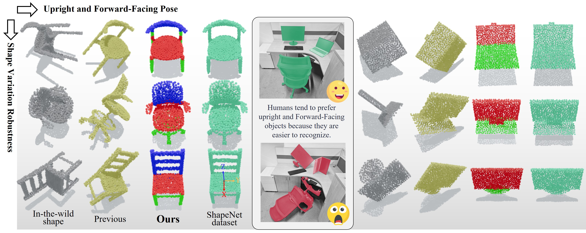
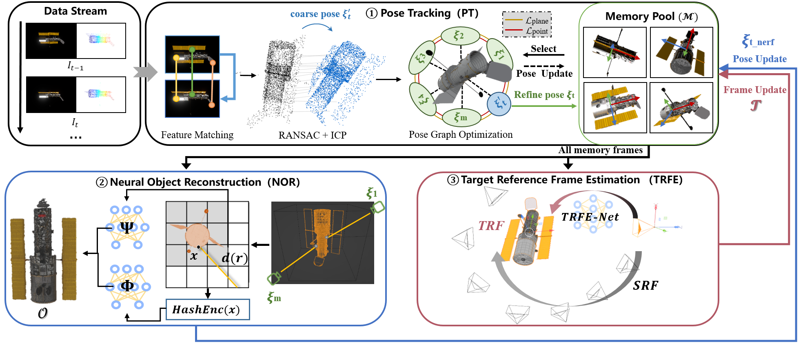
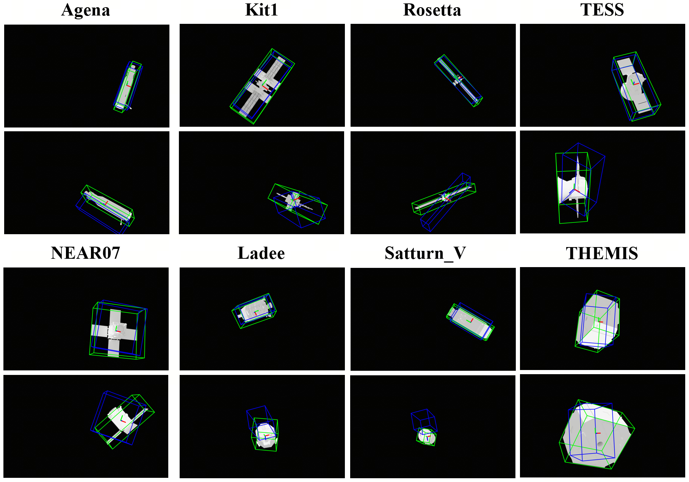
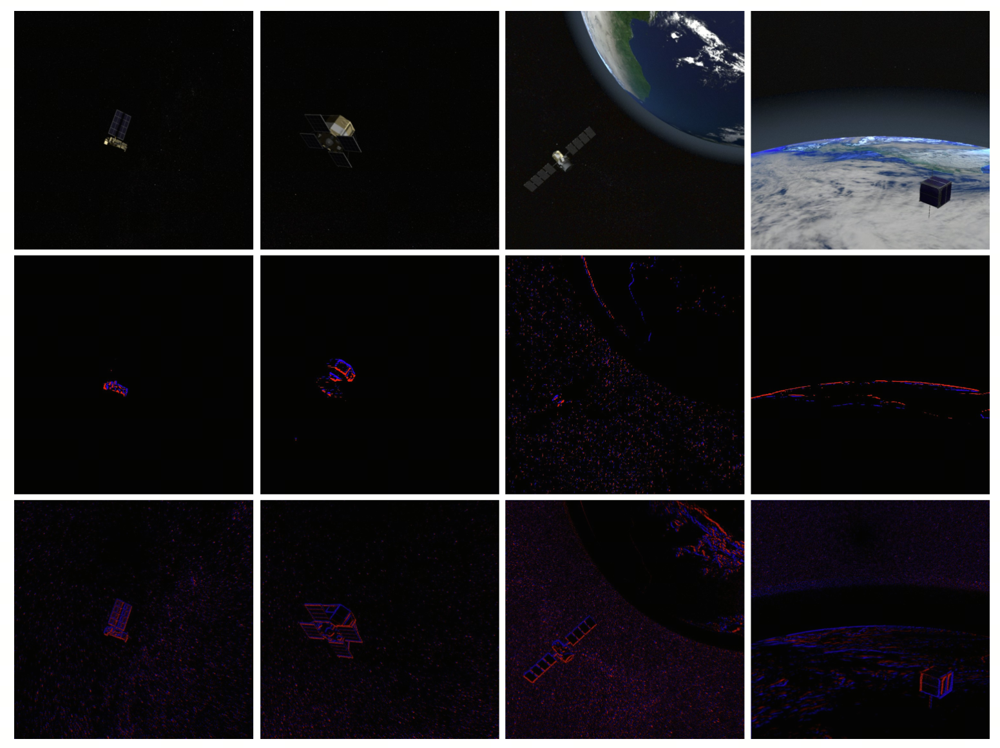
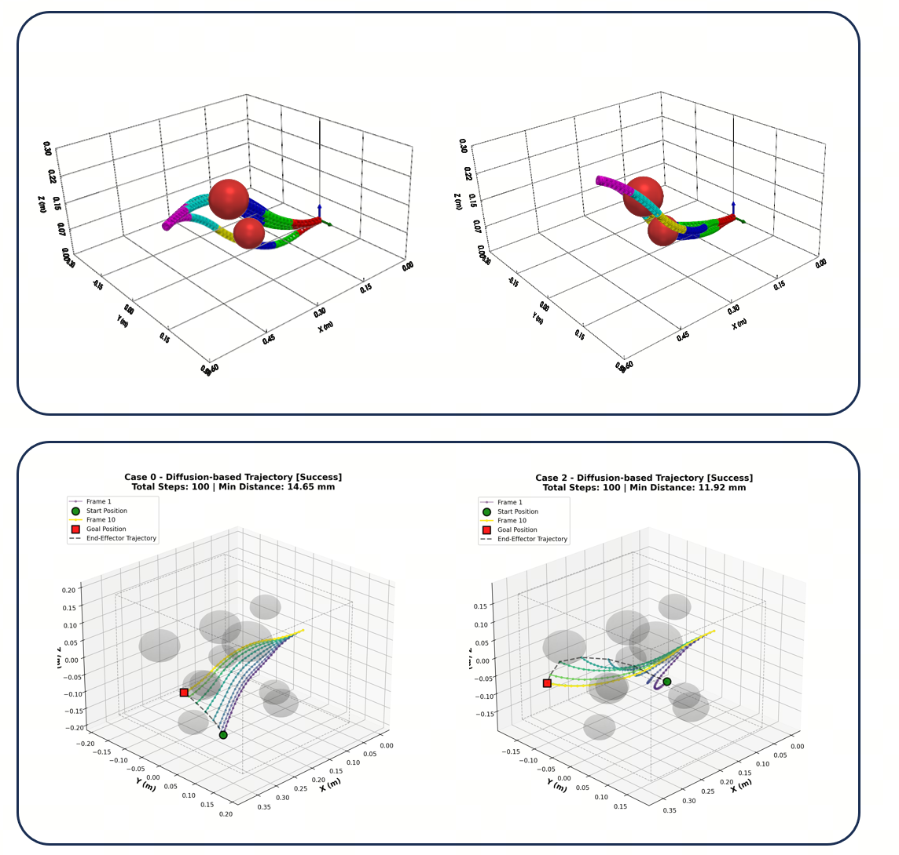

GeoDexGrasp: Geometry-aware Generation for Data-efficient and Physics-plausible Dexterous Grasping
CVPR 2026
I am a Ph.D. student at the School of Future Technology, Xi'an Jiaotong University, advised by Prof. Zhibin Zhao. I am also an intern at Galbot and have academic connections with Prof. Li Yi.
My research interests mainly include dexterous robotic manipulation and 3D vision.








